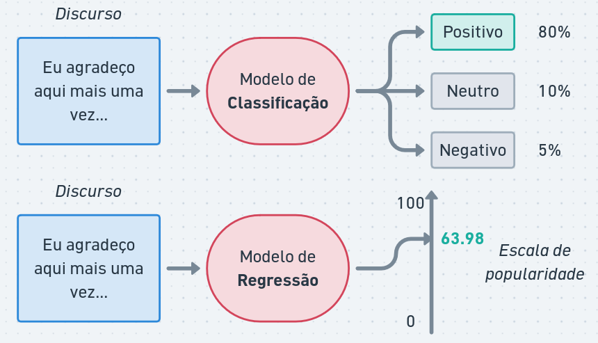
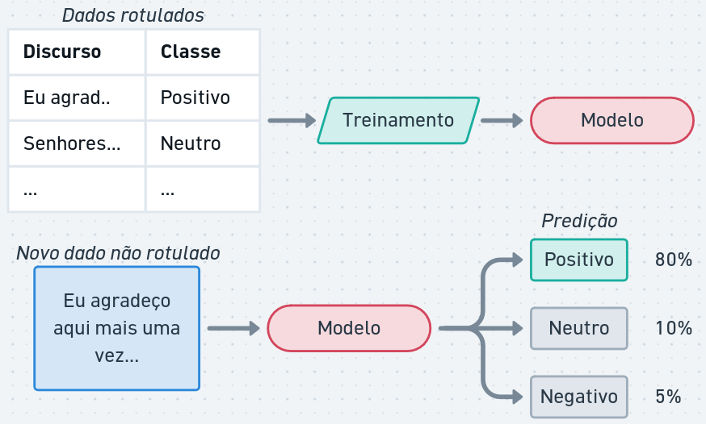
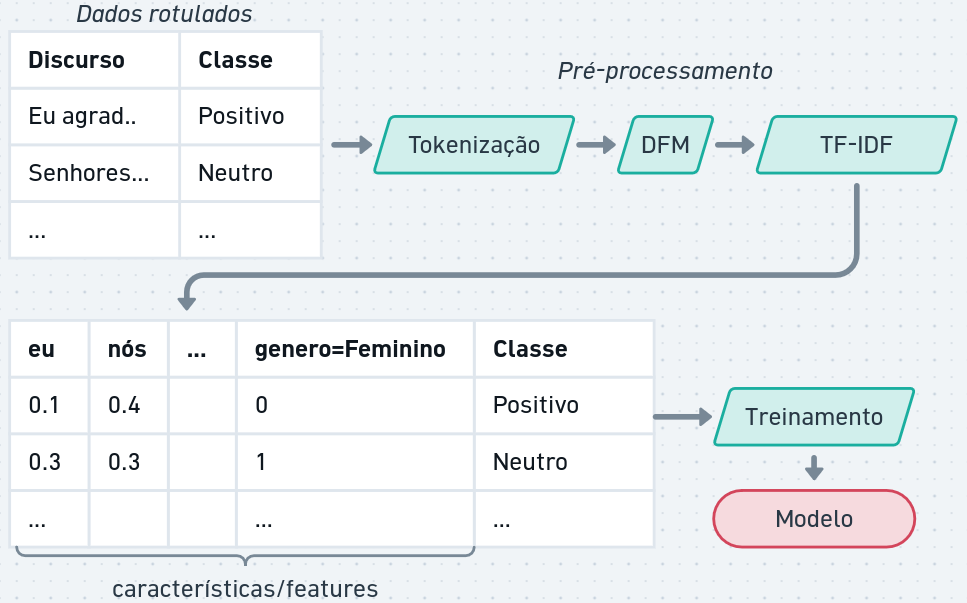
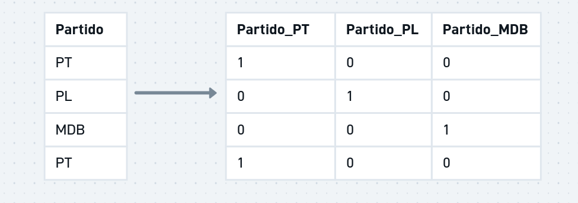
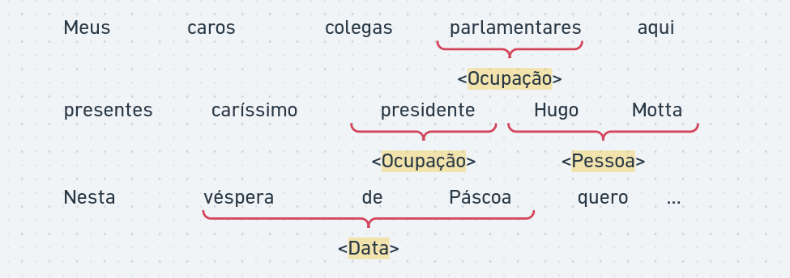
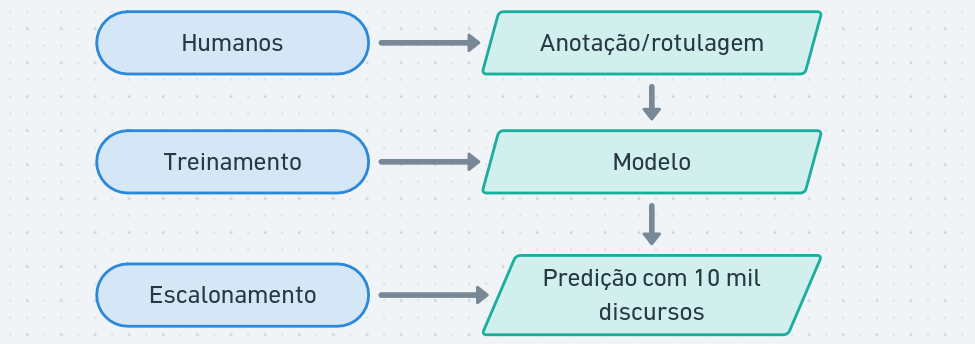

Classificação e Regressão Textual
Modelos de aprendizado supervisionado são aqueles em que o modelo é treinado com um conjunto de dados rotulado, ou seja, cada exemplo de treinamento tem um rótulo associado.
- Classificação: atribuir uma categoria a um texto. Exemplo: classificar discursos como “positivo”, “negativo” ou “neutro” em relação a um tema específico.
- Regressão: prever um valor numérico a partir de um texto. Exemplo: prever a popularidade de um discurso com base em seu conteúdo.

O treinamento supervisionado requer um conjunto de dados rotulados, também chamados de exemplos, onde cada exemplo de treinamento tem um rótulo associado. O modelo aprende a partir desses exemplos e é capaz de fazer previsões em novos dados.

Dependendo do modelo, os dados de texto precisam ser convertidos em uma representação numérica, como vetores de características (features) ou embeddings, para que o modelo possa processá-los.

Além disso, é possível adicionar metadados relacionados ao texto. Por exemplo, ao classificar discursos políticos, podemos incluir informações como o partido político do orador, a data do discurso ou o local onde foi proferido. Esses metadados podem fornecer contexto adicional que ajuda o modelo a fazer previsões mais precisas.
Dados categóricos, como o partido político, podem ser convertidos em variáveis dummy (one-hot encoding) para serem usadas como features no modelo. Por exemplo, se temos três partidos políticos (PT, PL e MDB), podemos criar três variáveis dummy: “Partido_PT”, “Partido_PL” e “Partido_MDB”. Se um discurso for do PT, a variável “Partido_PT” seria 1, enquanto as outras seriam 0.

Classificação de sequências e tokens
Além da classificação de textos completos, podemos também realizar a classificação de tokens individuais ou trechos do texto.

Já vimos uma aplicação de classificação de tokens em aulas anteriores: a análise sintática.
Modelos de classificação/regressão de sequências podem utilizar informações como:
- Contexto: a classificação de um token pode depender do contexto em que ele aparece. Por exemplo, a palavra “banco” pode se referir a uma instituição financeira ou a um objeto para sentar, dependendo do contexto.
- Características do token: características morfológicas, sua posição na frase, ou se é uma palavra maiúscula podem ser úteis para a classificação.
- Metadados: informações adicionais, como o tipo de documento ou o autor, podem fornecer contexto adicional para a classificação.
Aplicações para Análise de Discurso
Modelos de aprendizado supervisionado de textos podem ser aplicados em diversas tarefas de análise de discurso, como:
Análise de Sentimentos: medir hostilidade, otimismo, teor populista, adversários ou instituições.
Enquadramentos ideológicos: identificar como determinado assunto é tratado no discurso. Por exemplo, discursos sobre a Amazônia enquadrados como “Soberania Nacional”, “Preservação Ambiental” ou “Exploração Econômica”.
Detectar discurso de ódio: mapear textos contendo intolerância, preconceito ou violência ao longo do tempo.
Temática: classificar discursos em temas como economia, meio ambiente, saúde, etc.
Extração de informações: identificar entidades, eventos ou relações mencionados em um discurso.
Assim como em outros métodos vistos nas aulas anteriores, é importante perceber como as ferramentas ajudariam na análise cuidadosa dos discursos.
A anotação prévia dos dados geralmente é complexa e exige esforço humano. Modelos de aprendizado ajudam a escalar a análise para corpora maiores.

Algoritmos de aprendizado
Existem diversos algoritmos de aprendizado supervisionado que podem ser usados para classificação e regressão de textos, como:
- Naive Bayes: um modelo probabilístico baseado no teorema de Bayes, que assume independência entre as features.
- Regressão Linear e Logística: modelos lineares que podem ser usados para classificação (regressão logística) ou regressão (regressão linear).
- Árvores de Decisão: modelos que dividem os dados em ramos com base em condições sobre as features.
- Redes Neurais: modelos inspirados no funcionamento do cérebro humano, que podem capturar relações complexas entre as features.
Cada algoritmo possui características que influenciam o aprendizado. Um fator importante é a interpretabilidade. Em modelos como regressão linear e árvores de decisão, as predições podem ser explicadas a partir de dados do modelo (ex: por que o discurso X foi classificado como “neutro”?). Redes Neurais, por exemplo, geram boas métricas mas não são facilmente interpretadas.
Treinamento, teste e validação
Para aprendizado supervisionado, é boa prática separar um conjunto dos dados rotulados para teste. A ideia é utilizar dados que não foram utilizados durante o treinamento para avaliar a generalização do modelo (isto é: como o modelo se comportaria com novos dados).
Existem diversas métricas para avaliação de modelos de predição:
A acurácia de um classificador pode ser interpretada como o percentual de acerto:
\[
Acurácia = \frac{\text{número de predições corretas}}{\text{número total de exemplos}}
\]
Precisão é a proporção de predições corretas entre as predições de uma classe feitas pelo modelo:
\[
Precisão = \frac{\text{número de predições positivas corretas}}{\text{número total de predições positivas (corretas e incorretas)}}
\]
Recall (sensibilidade ou revocação) é a proporção de predições corretas entre os exemplos reais da classe:
\[
Recall = \frac{\text{número de predições positivas corretas}}{\text{número total de rótulos positivos}}
\]
O \(R^2\) (r-quadrado ou coeficiente de determinação) é uma métrica usada para avaliar a qualidade de um modelo de regressão. Ele varia entre 0 e 1, onde valores mais próximos de 1 indicam que o modelo explica melhor a variabilidade dos dados.
\[
R^2 = \frac{\text{Variância explicada}}{\text{Variância total}}
\]
O treinamento também pode envolver esquemas de validação cruzada (CV, do inglês cross-validation). Com CV, o conjunto anotado é dividido em partes iguais e o modelo é avaliado com todas as combinações de treinamento e teste. A CV gera métricas mais precisas, especialmente para escolher modelos e seus parâmetros.
Modelos de linguagem
Modelos de Linguagem são treinados para, dada uma sequência de palavras, prever a próxima palavra ou preencher lacunas em um texto. Eles aprendem a partir de grandes corpora de texto e capturam padrões linguísticos, semânticos e contextuais.
Modelos de Linguagem Grandes (LLMs, do inglês Large Language Models) são modelos de linguagem com um grande número de parâmetros (bilhões) e treinados em grandes quantidades de dados (trilhões). Estes modelos possuem capacidades para auxiliar em diversas tarefas relacionadas à linguagem.
Para análise de discurso, os LLMs podem ser usados para:
Classificação: classificar discursos em categorias temáticas, ideológicas ou de sentimento.
Geração de texto: gerar resumos, traduções, reformulações ou respostas a perguntas.
Extração de informações: identificar entidades, eventos ou relações mencionados em um discurso.
Análise de uso da linguagem: identificar padrões de linguagem, estratégias retóricas ou enquadramentos ideológicos.
Escolhas de modelo
Tamanho do modelo: modelos maiores geralmente têm melhor desempenho, mas exigem mais recursos computacionais e custo.
Tamanho do contexto: o contexto é a entrada que o modelo recebe para gerar uma resposta. Modelos com maior capacidade de contexto podem entender textos maiores.
Fine-tuning: é possível ajustar um modelo pré-treinado para uma tarefa específica, como classificação de sentimentos ou análise de discurso, usando um conjunto de dados rotulado.
LLMs de uso geral e ajustados são oferecidos como serviços em nuvem por empresas como OpenAI, Google, Microsoft, entre outras. Eles podem ser acessados por meio de bibliotecas, como ellmer e mall do R. Uma relação de modelos, custos e tamanhos de contexto está disponível em: https://models.litellm.ai/.
Configuração e construção de prompts
Temperatura e alucinações: a temperatura é um parâmetro que controla a aleatoriedade das respostas geradas pelo modelo. Valores mais baixos resultam em respostas mais conservadoras e valores mais altos podem gerar respostas mais criativas, mas também mais propensas a alucinações (informações incorretas ou inventadas).
Prompting: a forma como a entrada é formulada pode influenciar significativamente as respostas do modelo. Prompts bem elaborados podem melhorar a qualidade das respostas.
Algumas boas práticas para construção de prompts incluem:
Enunciar ordens específicas (ex: “liste as principais ideias do discurso em até 3 itens”).
Utilizar linguagem imperativa (ex: “responda com ‘sim’ ou ‘não’”, “não cite nomes de pessoas ou empresas”).
Prover exemplos (ex: “busque por frases que indiquem sarcasmo, como ‘claro, isso é ótimo’ ou ‘nossa, que surpresa’.”).
Chain-of-Thought (CoT) é uma técnica que envolve a geração de uma cadeia de raciocínio para chegar a uma resposta. Em vez de fornecer uma resposta direta, o modelo é incentivado a pensar passo a passo. (ex: para responder “O discurso de um orador é otimista?”, primeiro prompt seria “identifique palavras ou expressões positivas”, depois “avalie o tom geral do discurso”, então “o discurso é otimista? Responda com ‘sim’ ou ‘não’”).
Ferramentas e Retrieval-Augmented Generation (RAG)
Modelos de linguagem podem ser integrados a ferramentas externas, como bancos de dados, APIs ou sistemas de busca, para fornecer respostas mais precisas e atualizadas.
A Geração Aumentada por Recuperação (RAG, do inglês Retrieval-Augmented Generation) é uma técnica que combina modelos de linguagem com ferramentas de busca.
O RAG permite que o modelo acesse uma base de dados externa ao invés de assumir que o modelo possui todas as informações necessárias.
Algumas vantagens do RAG são:
- Volume de dados: a base de dados pode ser grande, pois não é necessário incluir toda a informação no contexto (prompt de entrada). Por exemplo, o modelo poderia ter acesso à base inteira de discursos, notícias, propostas, etc.
- Dados atualizados: o modelo pode acessar informações atualizadas, o que é especialmente útil para perguntas sobre eventos recentes ou dados em constante mudança.
- Sigilos e informações específicas: o modelo pode recuperar informações específicas, como estatísticas, datas ou nomes, que podem não estar presentes no conhecimento pré-treinado do modelo.
- Contexto específico: o modelo pode acessar informações contextuais específicas e referenciadas para a tarefa em questão, melhorando a relevância e precisão das respostas. Isso reduz a chance de alucinações.
LLMs também podem ser integradas com outras ferramentas. Como, por exemplo, buscas na internet, consultas em APIs, ou mesmo a execução de código para realizar análises mais complexas.